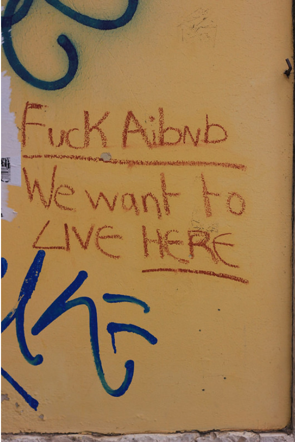

Hertie Coding Club
Session 3: (Re) Introduction to R
Dataframes
Example
We will work with Airbnb accommodation data in Berlin as of September 15, 2022. They are open data available at Airbnb: get the data.
They are open data licensed under the Creative Commons CC0 1.0 Universal “Public Domain Dedication.
Those who stay can choose between entire houses/apartments, only private rooms, or shared rooms (room_type).
After the stay, they must leave an evaluation (review).
Accommodations vary in price, a minimum number of days of stay, days available, etc.


Import dataframes from your computer
Base R and Tidyverse: %>% pipe operator
Limitations
Remember that our “then” chains functions in a logical (linear) order, the
%>%is less applicable to objects/problems that include multidirectional relationships.We can do just one object at a time.
It doesn’t work with certain functions of packages (don’t worry) that use the current environment, nor functions that use lazy evaluation. For our purpose, the pipe operator will be our best friend.

Dataframe functions (Base R and dplyr)
Filter two or more variables (numeric)
Base R
Base R (other way)
Dyplr without pipe
Dplyr with pipe

Dataframe functions (Base R and dplyr)
Other examples
Filter the dataframe by price: I want airbnbs that cost greater than or equal to 30 OR that cost less than or equal to 50
Filter the dataframe by price: I want airbnbs that doesn’t cost 30 euros.
Dataframe functions (Base R and dplyr)
mutate() function: With this function, we can create new variables variables.
Base R
Dyplr without pipe
Dplyr with pipe

Workspace / Environment
It is located in RAM memory.
The collection of objects generated in a session.
ls() to get the list of objects stored in RAM.
To remove objects you can use the rm() command.
When closing Rstudio they are lost, but we have the syntax to recreate them :)